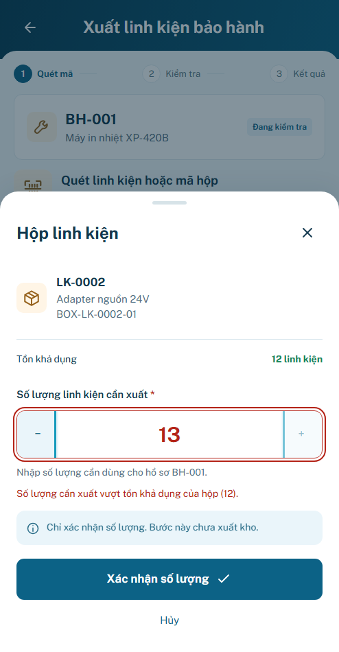

MOTION_P24 · Trạng thái Scanner
READY_FOR_FINAL · UI_FIXTURE
Chờ user review motion/hình thức. Chưa publish; backend và thiết bị thật chưa nghiệm thu.
765 test logic;24 nhóm M24;12 hành trình×3mode;15geometry/node-count bằng trước. Highlight lỗi140/80/0ms; waiting-Web160/0/0ms dùng owner cũ; quantity/closed guard tức thì. Không camera/count animation hoặc provider mới.
S01 · Viền lỗi tức thì theo MOTION_P24
Trước Sau · không shake
Sau · không shake
P24.S01
autoos-reduced off
off
Phạm vi giữ nguyên
91 panel gồm APPLIED/REUSED/STATIC_BY_DESIGN. Các trạng thái mở rộng giữ evidence theo owner; không coi91panel là91route hoặc toàn bộ state runtime. AppShell, overlay, M00 core/tokens, fixtures và business tracking giữ hash. S02 là panel riêng như B24; camera theo lifecycle owner, chỉ notice lỗi có hiệu ứng.
Runtime state inventory